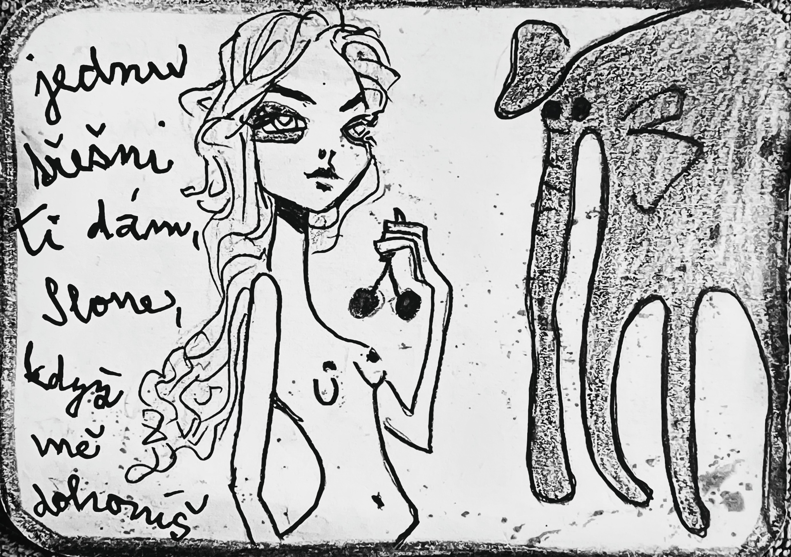

Zapsáno rukou, která nechtěla nic vysvětlit.
O SLONOVI
který běžel za třešní
—
Slon byl velký.
Těžký.
Rozvážný.
Nosil v sobě paměť krajin, které už neexistují.
Když šel, země se chvěla.
Když stál, čas se zpomalil.
—
A pak přišla ona.
Malá.
Rychlá.
Neuchopitelná.
Možná myš.
Možná vítr.
Možná jen hlas.
—
„Jednu třešeň ti dám, slone,“ řekla,
„když mě dohoníš.“
—
Slon se podíval na své nohy.
Na zem.
Na horizont.
A pak se rozběhl.
Ne rychle.
Ale srdcem.
—
Třešeň byla červená.
Lesklá.
Nedosažitelná.
A slon běžel.
Za chutí.
Za slibem.
Za něčím, co možná ani neexistuje.
—
Cestou míjel stromy, které si ho pamatovaly.
Řeky, které ho kdysi chladily.
Kamínky, které kdysi se mu smály.
Ale on běžel dál.
Přestože třešeň byla jenom ovoce.
—
Protože třešeň byla víc, než ovoce.
Byla výzva.
Byla hra.
Byla touha být lehčký.
Byla touha být silnější.
—
„Jednu třešeň ti dám, slone,“ znělo znovu a zas.
Ale nikdy ji nedostal.
A právě proto běžel.
Aby nemohl zastavit.
—
Protože kdyby ji dostal,
co by zbylo?
—
A tak se začalo říkat, že někde v krajině běží slon.
Za třešní, kterou nikdy nedohoní.
A že dokud se za ní požene, nikdy se nehoní.
A že stačí běžet za něčím malým.
A věřit, že to má velký smysl.